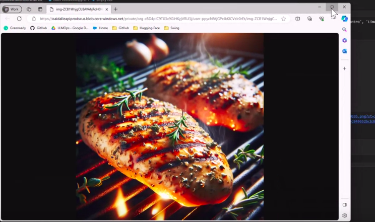

Project 1: Neural Network for Vehicle Dynamics Modeling
This project is focused on developing a neural network model to accurately predict the dynamics of a vehicle based on various sensor inputs. By utilizing deep learning techniques, this model aims to improve the understanding of how vehicles behave under different conditions, contributing to advancements in autonomous driving, vehicle control, and optimization systems.
Features
- Utilizes real-world vehicle dynamics data.
- Trained using Python and Keras with TensorFlow backend.
- Evaluates vehicle stability, handling, and control behavior.
- Includes performance metrics and visualizations.
- Implemented optimization techniques for better model accuracy.
Technologies Used
- Python
- Keras & TensorFlow
- NumPy & Pandas
- Matplotlib & Seaborn
- GitHub Actions
Project Status
The model has been trained on vehicle sensor data and is being fine-tuned to ensure high accuracy in predicting vehicle behavior in different scenarios. Future improvements include enhancing the model with more data and incorporating additional vehicle states for better control predictions.
Links
GitHub Repository
Live Demo (optional)
Project 2: Chat with Gemini Model Project 🌱
This project showcases the use of Google Gemini and Streamlit to create a simple chatbot interface. The chatbot interacts with users to answer questions using Google's Gemini-1.5 model via the Generative AI API.
Features
- Streamlit interface for question and answer functionality
- Utilizes Google Gemini for natural language processing
- Real-time chatbot interactions
Technologies Used
- Streamlit
- Google Generative AI API
- Python

Links
GitHub Repository for Chatbot
Live Demo (optional)
Project 3: QA Bot with LangChain, LLM, and IBM Watson AI
This project involves creating a question-answering bot that uses LangChain, IBM Watson AI, and a large language model (LLM) to answer questions based on content from loaded PDF documents. The bot integrates various components such as document loaders, text splitters, embedding models, vector databases, and retrievers to deliver accurate responses. The user interacts with the bot through a Gradio front-end interface, making it easy to use.
Features
- Loads and processes large PDF documents for content retrieval
- Leverages IBM Watson AI and LangChain for NLP
- Integrates Gradio for a user-friendly front-end interface
- Efficient retrieval of relevant information from vector databases
Technologies Used
- LangChain
- IBM Watson AI
- Large Language Models (LLM)
- Gradio Interface
- Python

Links
GitHub Repository for QA Bot Project
Live Demo (optional)
Project 4: MLOps with Hugging Face & GitHub Actions
This project demonstrates the integration of MLOps principles by automating model deployment workflows using Hugging Face Spaces and GitHub Actions. The project automates syncing the local machine learning project to Hugging Face Spaces whenever new changes are pushed to the repository, streamlining the deployment process and ensuring continuous integration and delivery (CI/CD).

Features
- GitHub Actions for CI/CD pipeline automation
- Automated model deployment to Hugging Face Spaces
- Easy synchronization of local changes with Hugging Face for continuous updates
- Supports both manual workflow dispatch and push-based triggers
Technologies Used
- GitHub Actions
- Hugging Face Spaces
- Python

Links
GitHub Repository for MLOps Project
Live Demo (optional)
Project 5: Dialog Summarization using Generative AI on AWS SageMaker
This project focuses on summarizing dialogues using a Generative AI model deployed on AWS SageMaker. It demonstrates the exploration of how different inputs and prompt engineering techniques affect the model’s summarization capabilities. The project is structured around multiple steps to improve the summarization through zero-shot, one-shot, and few-shot inference techniques, using generative models like FLAN-T5.
Project Workflow
- Set up Kernel and Required Dependencies: The environment was set up on AWS SageMaker, and dependencies were installed for model inference and testing.
- Summarize Dialogue without Prompt Engineering: The model generates basic summaries without specific instructions, demonstrating the default capabilities of the LLM in summarizing conversations.
- Summarize Dialogue with an Instruction Prompt: This step adds an instruction prompt to guide the model towards producing more relevant summaries.
- Zero Shot Inference with an Instruction Prompt: No examples are provided, and the model directly uses the prompt to generate a summary.
- Zero Shot Inference with the Prompt Template from FLAN-T5: A specialized prompt template designed for dialogue summarization, leveraging the capabilities of FLAN-T5.
- Summarize Dialogue with One Shot and Few Shot Inference: In this phase, example dialogues are provided to fine-tune the model's output further.
- One Shot Inference: A single example is given to the model before performing inference, leading to improved contextual summarization.
- Few Shot Inference: Several examples are provided, further enhancing the model's ability to generate accurate dialogue summaries.
- Generative Configuration Parameters for Inference: Various configuration parameters like temperature, maximum tokens, and top-p were experimented with to fine-tune the output and improve model behavior during inference.
Features
- Dialog summarization using generative AI deployed on AWS SageMaker
- Experimentation with zero-shot, one-shot, and few-shot inferences
- Prompt engineering to improve summarization accuracy
- Configuration of generative parameters to refine model output
Technologies Used
- AWS SageMaker
- Generative AI models (FLAN-T5)
- Python
Links
GitHub Repository
Project 6: Fine-Tuning a Generative AI Model for Dialogue Summarization with PEFT
This project involves fine-tuning an existing large language model (LLM) from Hugging Face for enhanced dialogue summarization. Using the FLAN-T5 model, which provides a high-quality instruction-tuned framework, this project focuses on improving dialogue summarization performance through both full fine-tuning and Parameter Efficient Fine-Tuning (PEFT). The project aims to enhance the model’s ability to summarize conversations while evaluating the trade-offs between fine-tuning strategies using the ROUGE metric.
Features
- Full fine-tuning of the FLAN-T5 model for enhanced dialogue summarization
- Utilizes Parameter Efficient Fine-Tuning (PEFT) techniques to minimize resource usage
- Evaluation of the model using human assessments and ROUGE metrics
Technologies Used
- Hugging Face LLM (FLAN-T5)
- Parameter Efficient Fine-Tuning (PEFT/LoRA)
- AWS SageMaker
- Python
- ROUGE Metrics
Links
GitHub Repository for Fine-Tuning Generative AI Model
Project 7: Fine-Tune FLAN-T5 with Reinforcement Learning (PPO) and PEFT to Generate Less-Toxic Summaries
This project explores how to fine-tune a FLAN-T5 model using Proximal Policy Optimization (PPO) and Parameter-Efficient Fine-Tuning (PEFT) techniques to generate less toxic content. Leveraging Meta AI's hate speech reward model, the fine-tuning process adjusts the model’s output to minimize harmful or toxic content. The reward model is a binary classifier that categorizes the generated content as either "hate" or "not hate," and the goal is to reduce the toxicity of the generated summaries.
Features
- Fine-tuning of a pre-trained FLAN-T5 model using reinforcement learning
- Use of Meta AI's hate speech reward model to guide the detoxification process
- Evaluates model performance using both qualitative and quantitative methods
- Application of Proximal Policy Optimization (PPO) for efficient fine-tuning
- Includes Parameter-Efficient Fine-Tuning (PEFT) for less resource-intensive training
Technologies Used
- AWS SageMaker for model training
- FLAN-T5 model
- Proximal Policy Optimization (PPO)
- Meta AI's Hate Speech Reward Model
- PEFT techniques
Links
GitHub Repository for Fine-Tuning Project
Project 8: Automated Recipe-based Shopping List and Image Generation
This project utilizes OpenAI's GPT-3.5 and DALL-E models to create a seamless experience for users to generate shopping lists from recipes and visualize them. Users input a recipe, and the system generates a shopping list based on the ingredients needed, as well as provides goods that complement the recipe. Additionally, DALL-E generates a relevant image of one of the items in the shopping list to enhance the user experience.
Features
- Automated generation of shopping lists based on recipe inputs
- Integration with GPT-3.5 for natural language processing and list generation
- Image generation using DALL-E for visual representation of recipe items
- Efficient extraction of ingredients using Python's regex capabilities
- Customization of prompt settings for varied output
Technologies Used
- OpenAI GPT-3.5 for text generation
- DALL-E for image generation
- Python's regex module for text processing

Project 9: Retrieval Augmented Generation with Local LLMs
This project demonstrates the implementation of the Retrieval Augmented Generation (RAG) pattern using a local LLM, FastAPI, and the Qdrant vector database. The goal is to provide fast and accurate responses by leveraging your own data. The project is based on the RAG pattern, enhanced with local inferencing and Qdrant for vector storage and retrieval.
Features
- Retrieval Augmented Generation (RAG) pattern implementation using local CSV data
- Integration of FastAPI for fast local inference with a local LLM
- Connection to a vector database (Qdrant) to store and retrieve document embeddings
- Use of Sentence Transformers for embedding creation
- Local LLM inferencing with Ollama to enhance response times
Technologies Used
- FastAPI for API development
- Qdrant for vector database management
- Sentence Transformers for embedding generation
- Ollama for running local LLM inferencing
- Python for API and LLM integration


Project 10: Ollama - Run Large Language Models Locally
This project demonstrates the use of Ollama to run large language models such as Llama 2, Phi, and Code Llama locally on your system. The project exposes an OpenAI-compatible API through Ollama, allowing you to connect to these models using Python. For deployment, Gradio is used to create an interactive interface, enabling users to chat with local LLMs and explore various use cases.
Features
- Run large language models like Llama 2, Phi, and Code Llama locally
- Connect to local LLMs using OpenAI's Python API
- Deploy an interactive chat interface using Gradio
- Explore various LLM functionalities in a local environment
Technologies Used
- Ollama for running local LLM instances
- OpenAI's Python API for connecting to LLMs
- Gradio for deploying a user-friendly interface